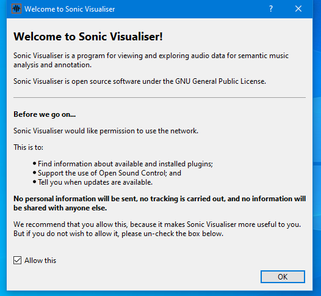
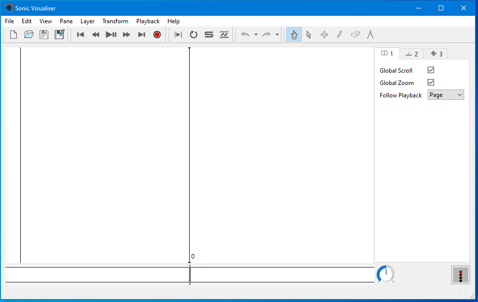
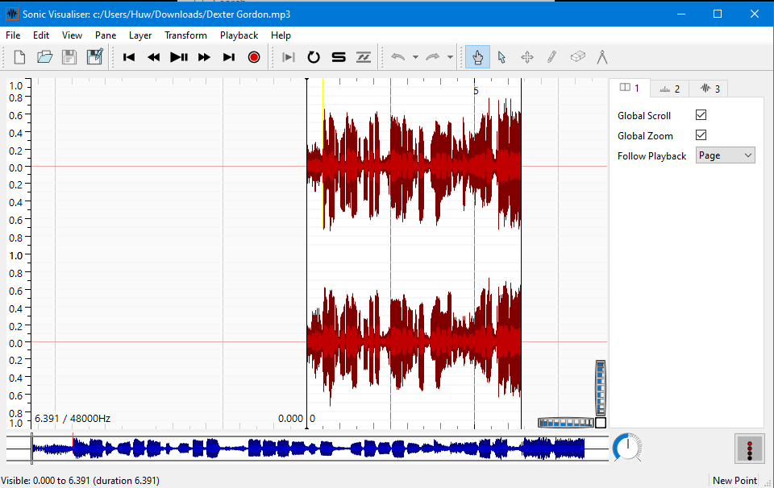
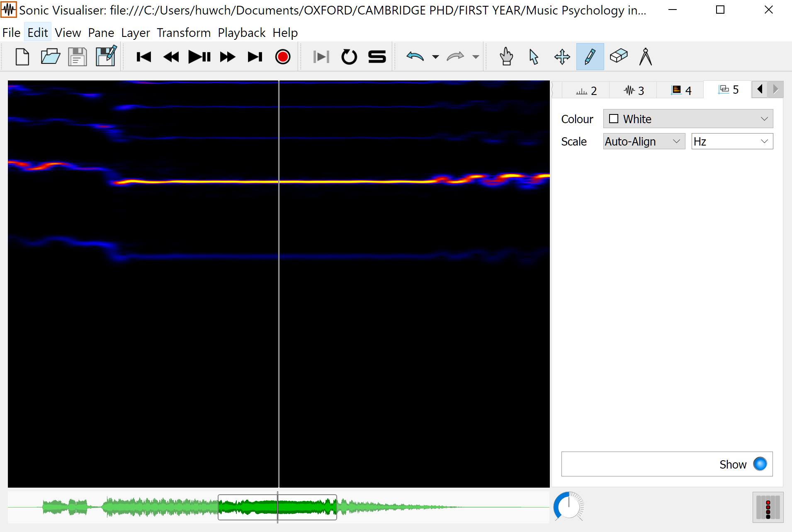
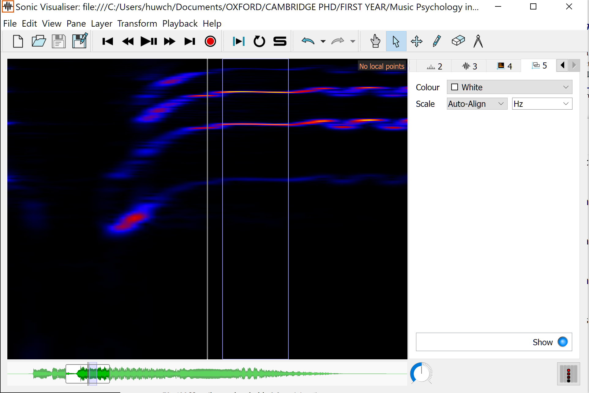
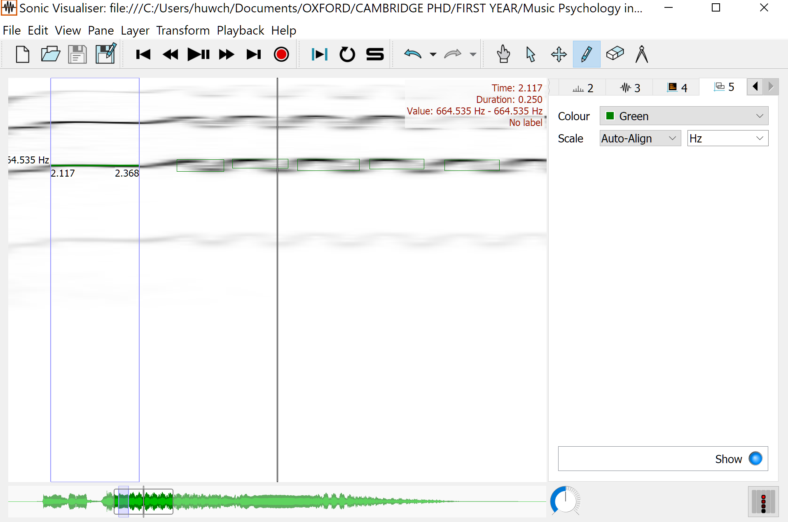
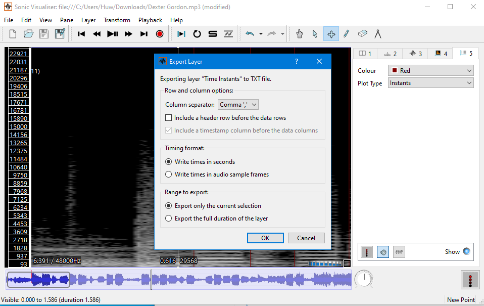

Section 2: Sonic Visualiser
Contents
Section 2: Sonic Visualiser¶
Note
We’ll be utilising Sonic Visualiser to gather our data. However, it is possible to carry out much of this analysis in Praat, another open source software platform that is especially designed for phonetic and linguistic work. This is the platform used by Herbst et al. and may be worth investigating yourself, if you have time.
Download Sonic Visualiser software and extract it to your system.¶
Navigate to the download page for Sonic Visualiser linked here.
If you are using a Mac computer, click the download link for Mac on the right of the page. If you are using Windows, you will likely need to use the 64-bit installer, on the left of the page. If you experience problems with this (or are using an older system, for instance), you may need to use the 32-bit installer.
Note
The Windows version of Sonic Visualiser runs on most modern updates. The Mac version requires OSX 10.12 or later. If you’re using a Mac and receive a warning along the lines of ‘application can’t be opened because Apple cannot check it for malicious software’, you will need to temporarily override your Mac security settings (don’t worry, the app is perfectly safe). First, go to Security & Privacy. Next, click the Open Anyway button in the General pane to confirm your intent to open or install the app. If this doesn’t work, you can also try dragging and dropping the download to your applications folder, and then right clicking on it to run. If none of these options work, please send me an email and I’ll see what I can do!
Whatever version you are using, download the program using the primary link. Open up the .msi (Windows) or .dmg (Mac) file you downloaded and follow the installer through to the end to complete the installation. On Windows, you may need to wait a while before pressing ‘Yes’ when the User Account Control screen pops up.
Select ONE performance for further study, download audio files.¶
Browse to the OneDrive folder linked here, you should find a folder called ‘Audio Files’.
Inside this folder are recordings of vibrato by three vocalists - Ella Fitzgerald, Frank Sinatra, and Luciano Pavarotti. All of these recordings are of a single phrase and have the vocals isolated to prevent any interference. Have a listen to these and download ONE of the performances that you want to work with in this exercise.
Open the audio spectrogram in Sonic Visaliser.¶
Open up Sonic Visualiser by locating it in the start menu (Windows) or Applications folder (Mac). You should be presented with the logo splash screen. The next thing you will see will be a welcome window that requests access to your internet network. Although we won’t be using any network features in this exercise, I’d recommend that you allow network access in case you want to use Sonic Visualiser in the future - it makes installing updates and plugins much easier.

The next screen you should see is a blank Sonic Visualiser window:

We now need to load in some audio. Open up the location where you saved the recording earlier in the file explorer (Windows) or finder (Mac), and drag and drop it onto the Sonic Visualiser window. You should see the waveform of the audio appear:

While interesting, this doesn’t help us much in locating the onset of individual bars or beats. A spectrogram is a better option, so click Layer at the top of the window, then Add Melodic Range Spectrogram and [NAME OF AUDIO].mp3: All Channels Mixed. This will shift to the Spectrogram view, where we can see the individual frequencies:

Warning
If you have previously completed or tried any of the other exercises, please be warned that the spectrogram used here is a melodic range spectrogram, not the default spectrogram - make sure to select the correct option!
Note
The spectrogram view will default to ‘Sunset’. For some people this might not be the best option, so you can choose the colour on the side panel. You can also adjust the threshold and colour rotation of the spectrogram using the two dials either side of the colour drop-down option, which may help when identifying note onsets. When working with melodic range spectrograms, I find that black-on-white tends to work well.
We also need to be able to hear the recording in Sonic Visualiser. To do this, we can use the large transport buttons at the top of the window (next to the file open and save buttons), or press the spacebar.
Note
If you find that the playback is too fast, you can slow the recording down using the large dial in the bottom right of the screen (immediately to the right of the waveform).
Identify the fundamental pitch of the note.¶
Each of the recordings consists of at least one held note, to which vibrato is applied after being held. We are interested in the fundamental pitch of the held note, and the amount of (higher and lower) vibrato applied to this. We’ll calculate the fundamental pitch first.
To do this, add a new boxes layer by clicking the Layer drop-down menu - Add Boxes Layer. You can now click and drag anywhere on the spectrogram to add a box, which will contain information of both the range of frequencies within the box and the amount of time it takes place across. We are interested in the former parameters only here.
Note
By default, Sonic Visualiser renders boxes as white lines. This can be confusing, as the playback line is also white. You can change the colour of the boxes on the right-hand menu.
Once you’ve tried creating some boxes, the next task is to place one over the held note to establish its fundamental frequency. Locate this in the spectrogram and then draw a box through the note, in the middle. It should be very thin, as we’re only looking at one pitch here.
Warning
When working with a spectrogram of a vocal recording, you will undoubtedly see numerous ‘lines’, each representing a different harmonic of the fundamental vocal. For now, it’s fine to work with whichever harmonic seems to present itself most clearly on the spectrogram - although in actual research we would obviously not be so imprecise!
Note
When working with pitches and Sonic Visualiser, it’s really important that we create boxes that go through the middle of spectrogram regions. See this article for more information as to why this is best practice.

Identify the vibrato depth.¶
Now that we’ve set a box to mark the fundamental pitch, we need to identify the vibrato depth. As mentioned by Herbst et al., vibrato consists of a modulation of the fundamental frequency. This usually consists of a ‘wobble’ between two adjacent (higher and lower) pitches, which may vary over time.
So that we don’t confuse our fundamental frequency box with our new vibrato boxes when exporting the data, create a new boxes layer as we did before and make sure it is set to a different colour. Now, identify when the vibrato starts to be applied to the held note in the recording.
Next, draw a single box that cuts through the higher and lower frequencies of the first vibrato ‘wobble’. Your box should contain two distinct pitches only. Continue this process until you deem the vibrato to have sufficiently tailed off.
Note
Use your judgement as to when the vibrato tails off: increasing the threshold of the melodic range spectrogram may help here.

Export your data for analysis.¶
Once you’ve drawn boxes through both the fundamental frequency and all the individual vibrato ‘wobbles’, it’s time to get the data out of Sonic Visualiser. Make sure your boxes layer (for the fundamental pitch) is active by selecting it in the panel on the right of the screen: it will likely be layer 5. Then, go to File - Export Annotation Layer. Choose where to save your file, select the file type .txt in the drop-down menu and press save.
Note
If you find that you get an error when trying to save, you may need to put .txt manually at the end of your filename - e.g. Timings.txt
In the ‘Export Layer’ dialogue window that follows, change the column seperator from Tabs (default) to Commas or Spaces: this will help us when we come to importing our data.

Now, repeat these steps to generate a second .txt file for our vibrato analysis. Make sure that your second boxes layer is selected from the panel on the right this time: it’ll probably be layer 6, unless you’ve added any others.
Now we’re ready to clean our data.